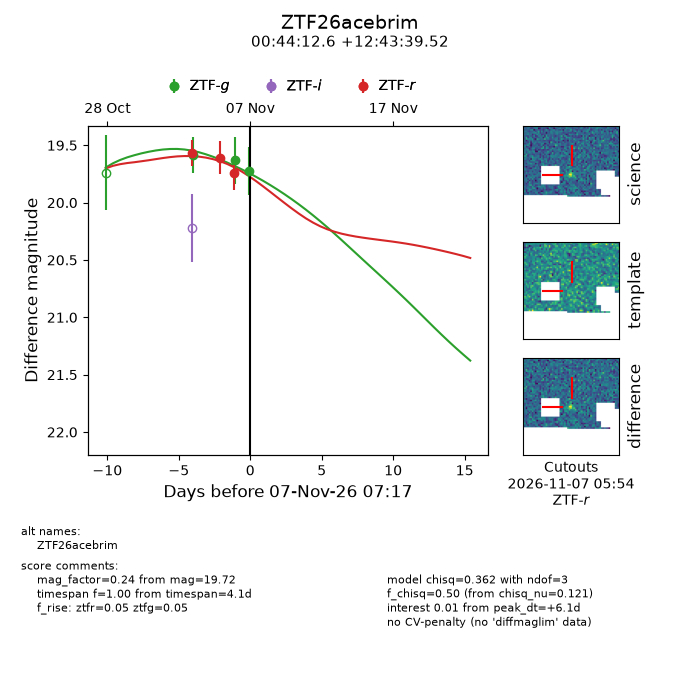
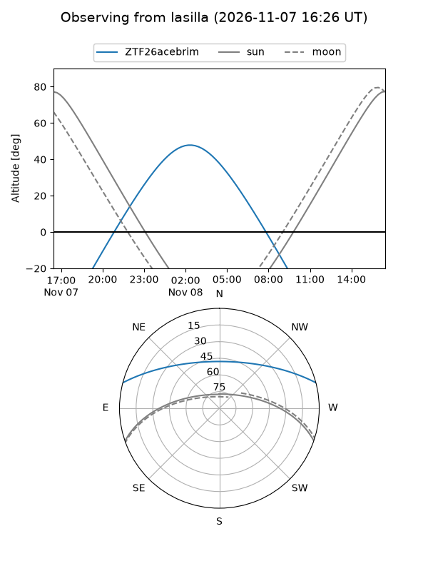
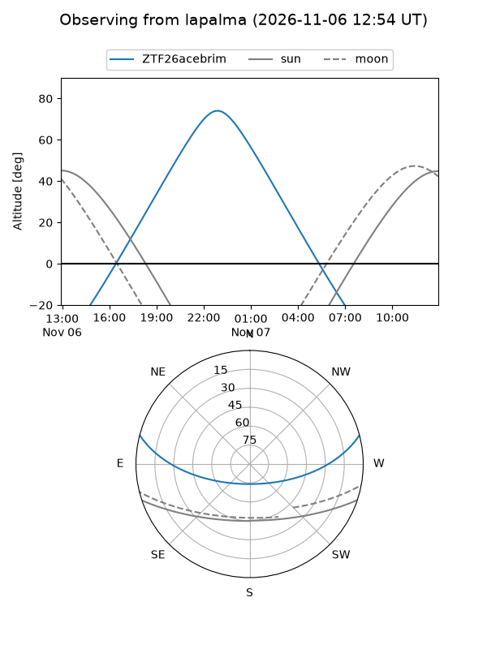
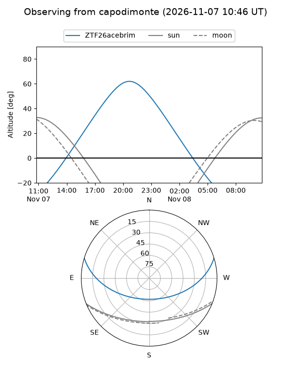
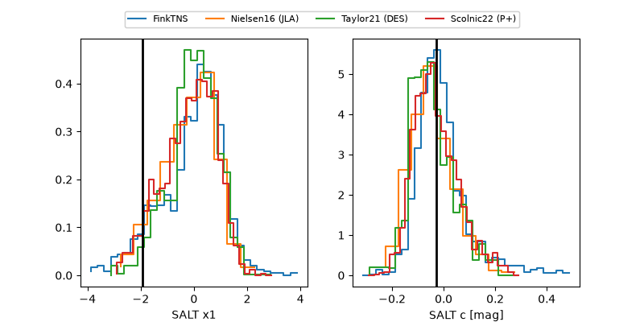

ZTF26acebrim
Target ZTF26acebrim at 2026-11-07 07:19
Aliases and brokers:
FINK-ZTF: ztf.fink-portal.org/ZTF26acebrim
Lasair-ZTF: lasair-ztf.lsst.ac.uk/objects/ZTF26acebrim
ALeRCE-ZTF: alerce.online/object/ZTF26acebrim
Direct TNS query: direct search
alt names
ZTF26acebrim (ztf,fink_ztf)
Coordinates:
equatorial (ra, dec) = 11.0527,+12.72764
equatorial (HMS+DMS) = 00:44:12.65,+12:43:39.52
galactic (l, b) = (120.1835,-50.10553)
Flags:
peak dt: +6.1
Photometry:
last ztfg=19.72, ztfr=19.74
3 ztfg, 3 ztfr detections
Lightcurve

Visibility



Additional plots
